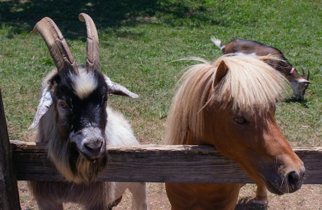

Ofte
Stilte
Spørsmål

Foto: Leslie Cross on UnsplashHvor ligger Skåtatunet?
Skåtatunet ligger i Bjørnafjorden, ca. 10 minutter fra fergekaien.
Må jeg bestille på forhånd?
Ja, for at det ikke skal bli for mange mennesker rundt dyrene på samme tid.
Hvilke åpningstider har dere?
Vi har Åpen Gård hver lørdag kl. 11–15, og Stallklubb hver tirsdag og torsdag ettermiddag. Kaféen har samme åpningstider som Åpen Gård.
Kan vi hilse på dyrene?
Ja! Dyrene våre er glade i mennesker. Vi ber likevel alle besøkende om å respektere dyrenes grenser og la dem få ro når de trenger det.
Kan vi mate dyrene?
Det er ikke lov å gi mat til dyrene utenom fôringstider.
Trenger jeg hesteerfaring for å være med på Stallklubb?
Nei, vi setter sammen grupper etter alder og nivå. Ingen forkunnskaper er nødvendig.
Hva bør jeg ha på meg?
Ha på klær som tåler å bli skitne. Det kan bli møkkete, så bruk gjerne gummistøvler. Skal man ri, skal man ha fottøy med liten hæl. Hjelm og sikkerhetsvest kan du låne her.
Hvor mange kan overnatte?
Vi har sengeplasser for 8 personer. For mer informasjon om huset, se airbnb.no .
Fant du ikke svar på det du lurte på? Ta gjerne kontakt med oss, så hjelper vi deg!